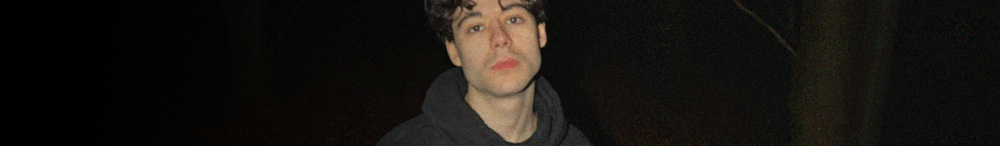

I'm Luciano Masala, a musician, sound designer, and composer from Italy.
I have more than 8 years of experience with composing, making various types of music, from Indie Pop, to EDM and Chiptune, to Orchestral and Folk.
I'm based in a small town in Padua, Italy, although I'm planning to move out of the country in the near future.
My stage name is papercuties; I write heartfelt songs that I produce and mix, and I have a small community of people who show interest in my work and are fans.
Some of my tracks have been featured on Spotify's editorial playlists such as Fresh Finds Dance, and also supported directly by better-known artists,
such as Tennyson, saaaz, Instupendo, & more...
I also run 2 other aliases, with marie being a lofi hip/hop musical project, and hershel an ambient project which debuted recently with its first album.
I work with Ableton Live 12 Suite, iZotope 10 Audio Editor, Max For Live and at times Audacity (mostly for raw data works).
As of right now, I'm looking to gain new musical work experience, such as: working on videogame OSTs and SFX, scoring movie soundtracks,
collaborating with more people and perhaps joining a team.
I'm also a recent graduate from the music school "Conservatorio Cesare Pollini," specializing in Jazz Guitar.